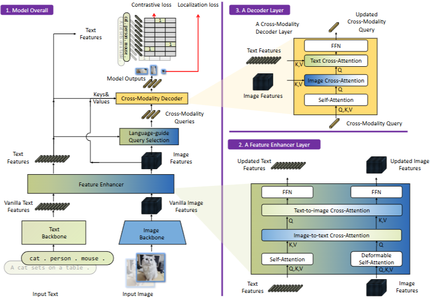

"객체 탐지의 종착역 DINO에서부터,
언어를 이해하는 Open-Set 탐지기 Grounding DINO까지"
Part 1: DINO
Part 2: Grounding DINO
객체 탐지 분야는 DETR (Detection Transformer)의 등장으로 큰 충격을 받았습니다. 사람이 수작업으로 만들던 앵커 박스(Anchor Box)와 NMS(중복 제거)를 완전히 없애버렸기 때문입니다.
기존 YOLO 모델들이 수십 번(Epoch)만 학습하면 될 때, DETR은 무려 500번 (500 Epochs)을 학습해야만 겨우 성능이 나왔습니다. 연산 비용이 어마어마했습니다.
DETR은 '헝가리안 매칭(이분 매칭)'을 통해 중복 박스를 없앱니다. 하지만 이 매칭 방식이 초기 학습 단계에서 모델의 '뇌'를 헷갈리게 만듭니다.
👨🎓 비유: 매일 전공이 바뀌는 대학생
1번 쿼리(학생)가 첫날에는 "사과(정답 1)"를 찾는 임무를 배정받아 열심히 공부했습니다.
그런데 다음 날, 수학적 계산에 의해 갑자기 1번 쿼리에게 "바나나(정답 2)"를 찾으라고 임무가 바뀝니다.
쿼리 입장에서는 어제 배운 지식과 오늘 찾아야 할 목표가 달라져서 혼란(Instability)이 오고, 이 혼란이 잦아들 때까지 수백 번의 재학습이 필요했던 것입니다.
DINO(DETR with Improved DeNoising Anchor Boxes)는 이 매칭 혼란을 잠재우기 위해 '노이즈 복원 훈련(DeNoising)'이라는 기발한 지름길을 만듭니다.
맨땅에 헤딩하게 두지 않고, 처음부터 진짜 정답 박스(GT)의 위치를 살짝 비틀어서(Noise) 모델에게 던져줍니다.
그리고 모델에게 "이 박스 위치가 조금 틀렸으니 올바르게 가운데로 고쳐봐!"라고 학습시킵니다. 이를 통해 모델은 어디로 가야 정답이 있는지 단번에 깨닫게 됩니다.
살짝 망가뜨린 박스(Positive)만 주는 게 아닙니다. 아예 정답에서 멀리 떨어진 엉뚱한 박스(Negative)도 함께 던져주어, "이건 쓰레기니까 볼 필요도 없이 배경(Background)으로 무시해!"라고 가르칩니다.
디코더가 물체를 찾기 시작하는 '출발점(초기 쿼리)'을 영리하게 세팅합니다.
기존에는 아무런 힌트 없이 무작위 위치에서 탐색을 시작했습니다. (마치 안대를 끼고 방 안의 물건을 더듬어 찾는 것과 같습니다.)
DINO는 이미지 인코더가 이미 추출해놓은 특징 맵(Feature Map)을 훑어보고, "물체가 있을 법한 확률(Objectness)"이 높은 좋은 위치들을 선별해 앵커 박스(초기 출발점)로 던져줍니다.
디코더의 여러 층(Layers)을 거치면서 네모 박스의 위치와 크기를 조금씩 더 정밀하게 다듬는 기술입니다.
기존 방식은 현재 층에서 박스를 수정할 때, 바로 이전 층의 결과물만 보고 수정했습니다.
하지만 DINO는 이전 층의 위치(좌표) 정보뿐만 아니라, 오차를 줄이기 위한 기울기(Gradient) 정보까지 두 번 참조(Look Forward Twice)하여 박스의 위치를 훨씬 더 부드럽고 섬세하게 수정합니다.
위 3가지 혁신을 모두 결합한 DINO는 DETR 계열 객체 탐지 모델의 최종 완성형(마스터피스)이 되었습니다.
DINO는 기존 모델들의 문제(속도, 정확도)를 완벽히 해결하여 COCO 벤치마크 1위를 달성했습니다.
하지만, 모델이 미리 학습한 COCO의 80개 클래스(사람, 차, 강아지 등) 목록에 없는 새로운 물체를 사진에서 찾아달라고 하면 전혀 찾지 못하는 근본적인 한계가 여전히 남아있었습니다.
Closed-set의 한계를 깨부수고,
언어를 통해 세상 모든 물체(Open-set)를 탐지하다.
객체 탐지를 완전히 새로운 관점으로 재정의합니다.
"사진에서 미리 배운 80개 물체 목록 중에 있는 것만 찾아내서 네모를 쳐라."
"사람이 입력한 문장 속 단어(Phrase)들이 사진의 어느 픽셀 구역(Box)에 해당하는지 1:1로 짝을 맞춰라(Grounding)."
사실 텍스트와 객체 탐지를 엮으려는 시도는 이전에도 있었습니다. 대표적인 것이 마이크로소프트의 GLIP입니다.
GLIP은 언어 결합에는 성공했지만, 탐지기의 뼈대로 과거 방식인 Faster R-CNN (Dynamic Head)을 사용했습니다. 이 방식은 복잡하고 이미지 전체의 문맥(Global context)을 보는 능력이 약합니다.
"현재 객체 탐지 구조의 끝판왕은 트랜스포머 기반의 DINO다. 이 완벽한 뼈대(DINO)에 언어(Language)를 결혼시키면 성능이 폭발할 것이다!"
단순히 결과물만 비교하지 않습니다. Grounding DINO는 모델의 처음, 중간, 끝 모든 단계에서 시각과 언어를 끊임없이 섞어줍니다.

이미지의 픽셀 데이터를 분석하여 컴퓨터가 이해할 수 있는 벡터(Feature)로 변환하는 시각 엔진입니다.
Grounding DINO는 강력한 Swin Transformer를 사용하여 이미지를 여러 크기(Multi-scale)로 쪼개어 분석합니다.
사용자가 입력한 프롬프트 문장을 단어(토큰) 단위로 쪼개고, 그 의미를 벡터로 변환하는 언어 엔진입니다.
자연어 처리의 혁명을 일으킨 BERT (Bidirectional Encoder Representations from Transformers) 모델을 사용합니다.
비전 트랜스포머(ViT)의 연산 한계를 극복하기 위해 제안된 계층적(Hierarchical) 트랜스포머입니다.
창(Window)을 이동시켜가며
국소적 특징과 전역적 특징을 모두 파악
문맥의 의미를 양방향(Bidirectional)으로 완벽하게 이해하는 자연어 처리 모델의 표준입니다.
"사과"라는 단어가 '먹는 사과(Apple)'인지 '용서(Apology)'인지 알려면 문장 전체를 봐야 합니다.
BERT는 순차적으로 단어를 읽는 기존 방식과 달리, 문장 전체를 한 번에 입력받아 앞뒤 단어들의 관계(Self-Attention)를 동시에 분석하여 해당 단어의 '진짜 의미'가 담긴 벡터를 생성해 냅니다.
양방향 문맥을 모두 참조하여 단어의 의미 확정
각 백본에서 특징을 뽑아내자마자, 시각 벡터와 언어 벡터를 교차(Cross)시켜 서로의 맥락을 깊게 반영합니다.
Self-Attention: 이미지 내부 픽셀끼리, 텍스트 단어끼리 문맥 파악
Cross-Attention: 이미지가 텍스트를 참조하고, 텍스트가 이미지를 참조함 (Bi-directional)
결과: 서로의 특징이 물든(Enhanced) 강력한 벡터 탄생!
이 논문이 자랑하는 최고의 혁신입니다.
디코더에 들어갈 "탐색의 출발점(초기 쿼리)"을 텍스트 기반으로 정합니다.
입력된 텍스트가 무엇이든 상관하지 않습니다. 그저 특징 맵을 보고 '어떤 물체든 있을 법한' 박스들을 상위 확률순으로 무작위로 뽑아 쿼리로 삼았습니다.
텍스트 특징 벡터와 이미지 특징 벡터 간의 내적(유사도)을 계산합니다. 사용자가 입력한 프롬프트 단어와 의미적으로 가장 비슷한 이미지 좌표들만을 엄선하여 쿼리로 초기화합니다.
텍스트가 콕 찍어준 최적의 초기 위치에서 탐색을 시작한 쿼리들은, 디코더(Decoder) 층을 거치며 박스를 정밀하게 완성합니다.
디코더 안에서도 시각과 언어가 반복적으로 교류하며 1:1 Grounding을 확정 짓습니다.
모델이 정답을 맞히도록 훈련시키기 위해 크게 두 가지의 손실 함수(Loss)를 계산합니다.
전통적인 객체 탐지의 '클래스 분류기(Classifier)' 역할을 대신합니다. 예측된 이미지 박스 안의 픽셀 벡터와 해당 영역을 설명하는 단어(Text Token) 벡터 사이의 거리를 계산합니다.
올바른 짝(사과 이미지-사과 단어)은 당기고, 틀린 짝은 밀어냅니다.
일반적인 DINO나 DETR 계열과 동일합니다. L1 Loss(중심 좌표 오차)와 GIoU Loss(영역 겹침 비율)를 사용하여 예측된 네모 박스의 크기와 위치가 실제 정답 박스에 100% 포개어지도록 훈련합니다.
논문의 핵심 기여 중 하나입니다. Grounding DINO는 전체 문장 하나를 하나의 객체로 통째로 묶지 않습니다.
모델은 문장을 토큰(Token) 단위로 쪼개어, 문장 내에 포함된 여러 개의 하위 명사(Sub-sentences)들을 각각 개별적인 Bounding Box와 따로따로 매칭(Grounding)시킵니다.
만약 이미지에 똑같은 개가 2마리 있고, 프롬프트가 "두 마리의 개"라면 어떻게 될까요?
Contrastive Loss 학습의 마법 덕분에, 단어 '개'라는 텍스트 토큰은 이미지 내의 첫 번째 개 픽셀과도 유사도가 높게 계산되고, 두 번째 개 픽셀과도 유사도가 높게 계산됩니다.
결과적으로 '개'라는 1개의 단어가 여러 개의 독립적인 바운딩 박스를 동시에 생성해내는 1:N 매칭이 자연스럽게 이루어집니다.
막강한 Open-set 성능은 알고리즘뿐만 아니라 방대한 스케일의 고품질 데이터에서 나옵니다.
Objects365 데이터셋.
수많은 클래스가 포함된 방대한 바운딩 박스 데이터.
Flickr30k, VG 등 인간이 직접 박스와 단어를 1:1로 정밀하게 매칭한 최고품질 데이터.
웹에서 수집된 이미지-캡션 쌍에 Pseudo label(가짜 정답)을 생성하여 스케일 확장.
단 한 번도 본 적 없는 데이터셋(COCO, LVIS)에 대해 추가 학습 없이(Zero-shot) 테스트한 결과입니다.
비슷한 크기의 백본(Swin-T)을 가진 라이벌 모델 GLIP-T와 비교했을 때, Grounding DINO는 COCO에서 52.5 AP (+9.6 AP 압승), LVIS에서 29.6 AP (+3.6 AP 상승)라는 엄청난 성능 차이를 보여주었습니다.
3단계 융합 아키텍처 중, 어떤 구성 요소가 성능을 가장 크게 끌어올렸을까요? (논문 Table 5)
디코더 단계에서 텍스트 확인 과정을 없앴을 때
백본 직후 시각-언어가 섞이는 초기 모듈을 없앴을 때
텍스트 기반의 출발점 탐색을 없애고, 일반 DINO처럼 무작위로 시작했을 때
논문의 정성적 평가(Qualitative Results)에서 Grounding DINO는 매우 놀라운 수준의 속성(Attribute) 이해력을 보여줍니다.
Query: "Pink flower on the left"
사진에 꽃이 수십 송이 깔려 있어도, 정확히 색상(Pink)과 위치(Left) 속성을 모두 이해하여 해당 조건을 만족하는 꽃 하나에만 핀포인트로 박스를 칩니다.
산업계에서 Grounding DINO가 각광받는 이유는 엄청난 "라벨링 비용 절감" 때문입니다.
공장, 도로 등에서 찍힌 수십만 장의 무라벨 원본 이미지를 준비합니다.
"안전모", "크랙" 등 텍스트만 치면 밤새도록 고품질 Bounding Box를 자동 생성합니다.
➔공짜로 얻은 라벨 데이터로 빠르고 가벼운 엣지용 모델을 재학습시켜 배포합니다.
메타(Meta)의 SAM (Segment Anything Model)과의 결합은 비전 AI 생태계의 패러다임을 바꿨습니다.
이미지 백본(Swin)과 텍스트 백본(BERT)을 동시에 돌려야 할 뿐만 아니라, Feature Enhancer와 Decoder 단계에서 계속해서 Cross-Attention 연산을 수행해야 합니다.
결과적으로 모델이 상당히 무거워져, 드론이나 모바일 기기에서의 실시간(Real-time, 30fps 이상) 비디오 추론에 바로 적용하기에는 무리가 있습니다.
언어 모델의 고질적인 한계 중 하나입니다. 프롬프트에 "사과 3개"처럼 명확한 개수를 요구하는 텍스트를 입력했을 때 오류가 잦습니다.
3개의 박스를 각각 예쁘게 치는 대신, 사과 3개가 모여 있는 곳에 거대한 박스 1개를 치거나, 일부를 누락하는 현상이 발생합니다.
Grounding DINO는 최고 성능의 비전 디텍터(DINO)의 뼈대에, 무한한 지식을 가진 언어(Language)를 초기 단계부터 깊숙이 융합(Deep Fusion)하여 Open-set 객체 탐지의 새로운 기준을 세웠습니다.
Thank You
Q & A Session